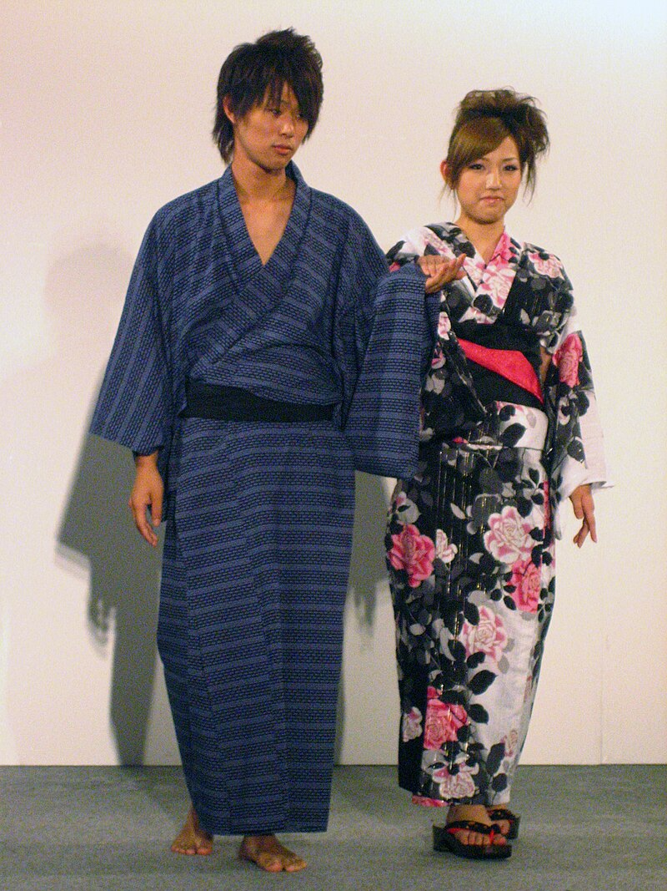
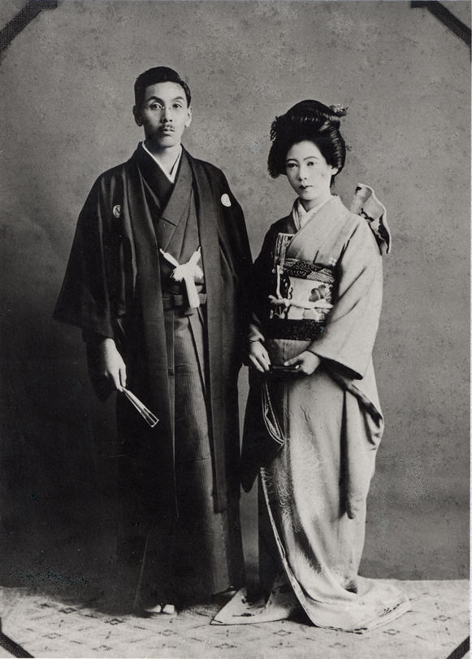

Yukata

The yukata (浴衣) is a casual version of the kimono. It is a robe usually made of cotton or synthetic fabric, wrapped around the body and fastened with a sash (obi). Yukata literally means "bathing cloth", and it was originally intended to be just that. Traditionally, the garment is worn after bathing in a communal bath, functioning as a quick way to cover the body and to absorb remaining moisture.
Fittingly, the yukata is often worn in hot spring (onsen) towns. It is also the typical dress for guests at ryokan. Visiting an onsen town can provides the enjoyable experience of strolling the streets in yukata and geta (wooden clogs), producing scenes reminiscent of past centuries.
The yukata has also become a popular way of dressing for summer festivals. Increasingly fashionable designs have surfaced to a degree that it is sometimes difficult for the untrained eye to discern between a yukata and a kimono. Yukata for men generally have darker or more subdued colors, while that for young women are usually bright and colorful, often with floral designs. Yukata for matured women tend to be less flashy.
Kimono

The kimono usually just comes in one size, although distinctions are made between what men, women, and children wear. When choosing which kimono to wear, people think about the designs and materials that best match the season and how well it goes with the belt, which, in the case of women's formal attire, is about 10 inches wide and is elaborately decorated.
Most kimonos are made of silk, although they also come in cotton, wool, and linen. Compared to Western dress, the kimono tends to limit one's movement, and it takes more time to wear and store properly. So most Japanese today wear kimonos only on special occasions like formal gatherings and traditional events.
Examples include the New Year holidays, the Shichi-go-san festival to pray for the healthy growth of children, weddings and funerals, the coming-of-age ceremony to mark one's twentieth birthday, and the graduation ceremony. Except for the Shichi-go-san festival for kids, it's usually just the women who wear kimonos.
Differences
There are 3 differences between a Yukata and Kimono:
Materials
A traditional version of a yukata is most commonly made from cotton.
This is for two main reasons: firstly it’s one of the most comfortable and breathable fabrics, ideal for Japan’s long hot summers.
Secondly, cotton is quick to dry, making it the ideal material for soaking up any extra moisture left on the body post-bath. Modern yukata designed to be worn at festivals are also sometimes made from synthetic materials, which can be even more efficient at evaporating moisture away from the skin.
Perhaps the most obvious difference between a kimono and yukata, at least if you’re wearing it yourself, is that kimono usually (although not always) have an interior lining, whereas yukata never do, and are sewn from a single layer of fabric.
Style
The yukata is quite similar to a bathrobe or dressing gown in terms of style, and is usually worn with less formality and accessories than a kimono.
Expensive silk or ornately decorated kimono are very rarely washed, so are worn with an inner layer, known as a nagajuban, which keeps the outer garment clean and dry. Yukata on the other hand are much easier to clean, and so are usually worn without a nagajuban.
Occasion
Yukata are festive, and are often worn for parties, festivals, and events such as firework displays. Unlike kimono, however, they are not worn at formal ceremonial events.
Although it may be difficult to tell the difference for an outsider, wearing a thin, brightly-colored yukata to an auspicious occasion might come across as too casual!